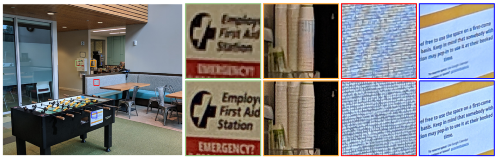
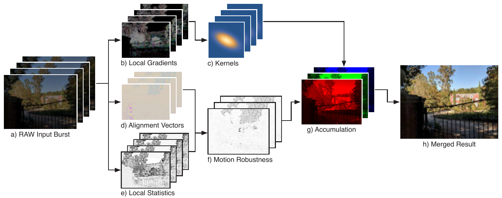
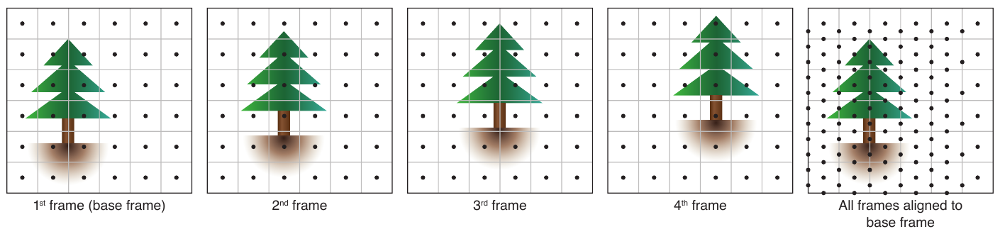
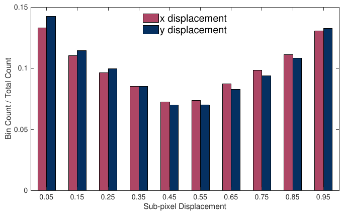
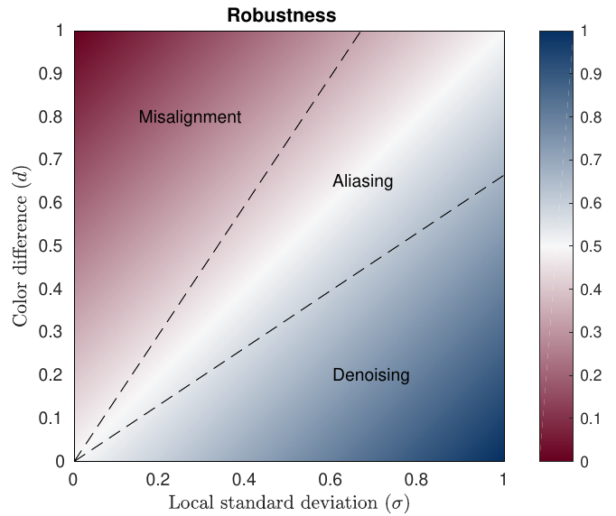
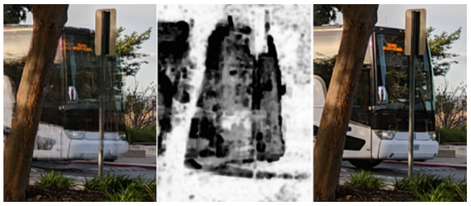
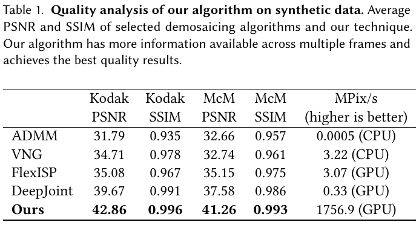
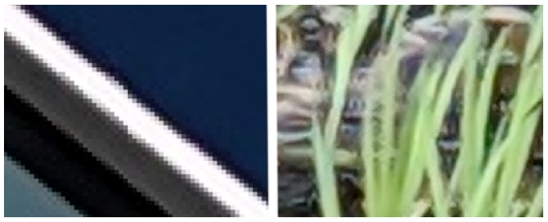

Handheld Multi-Frame Super-Resolution
关于代码:Google 没有公开官方实现。本文引用的全部代码出自 非官方复现 Jamy-L/Handheld-Multi-Frame-Super-Resolution(MIT 许可，约 215★，Numba-CUDA 实现，配套论文 Lafenetre, Facciolo, Eboli, Implementing Handheld Burst Super-Resolution, IPOL 2023)。本文对照的是 2026-09-30 的
main分支 (commit27c4655)。README 自己写明这一版「已与 IPOL 在线 demo 有较大出入」。下文凡是「代码这样做」,指的都是这份复现，不代表 Google 产线实现。

问题
手机像素小、镜头采样率低于 2 (镜头光斑小于两个像素，所以会混叠),Bayer 阵列又让 R/B 只有 1/4 采样。去马赛克只能靠「颜色局部恒定」的先验去猜，猜错就是拉链纹、伪彩和摩尔纹。
观察
手持拍摄时手总在抖 (8–12 Hz 的生理震颤)。对齐到基准帧后，各帧像素中心在亚像素空间里近似均匀分布。混叠在这里是可用的信息，前提是每帧的混叠相位不同。
方法
块匹配 + 3 次 Lucas-Kanade 做亚像素配准，再把每个 Bayer 像素当作稀疏样本，用结构张量控制的各向异性高斯核在输出网格上做核回归，R/G/B 分开累加，全程不做去马赛克。
鲁棒性
引导图上比较「两帧颜色差 d」和「基准帧局部标准差 σ」:d 小于 σ 时合并 (去噪),d 接近 σ 的一定比例时也合并 (算作混叠，用于超分),d 远大于 σ 时剔除 (错位或运动)。再叠加一个光流不平滑的运动先验和 5×5 最小值腐蚀。
结果
Kodak/McMaster 合成连拍 PSNR 42.86/41.26 dB,DeepJoint 是 39.67/37.58。MTurk 两两比较中，相对第二名 (Hasinoff+DeepJoint) 的偏好率为 79.2%。Adreno 630 上每 MPix 每帧 7.8 ms。
1. 出发点 (Motivation)
一块 12MP 手机传感器给出的「分辨率」其实比 12MP 低，原因有两层。
第一层是 Bayer 阵列 (CFA)。 每个像素只有一个颜色的滤光片，RGGB 排列下绿色占 50%,红蓝各 25%。完整的 RGB 要靠去马赛克插值出来，而所有去马赛克算法都建立在「局部颜色近似恒定、通道之间高度相关」这个假设上 [§1]。遇到高饱和的单色区域 (纯红布、纯蓝衣服),假设失效，就会出现色彩渗漏、细节丢失和拉链纹 (zipper)[§6.1, Fig. 13]。
第二层是混叠。 论文 §7.1 给了一个关键数字:iPhone X 和 Pixel 3 主摄的采样比 (镜头衍射光斑与像素尺寸之比) 在亮度通道上约 1.5–1.8,低于不混叠所需的 2。再算上 CFA,绿色通道的混叠要多 50%,红蓝通道最多多一倍。高于奈奎斯特频率的纹理在单帧里会以「假的低频」形式出现，也就是摩尔纹。
传统多帧超分的经典结论 [Tsai & Huang 1984] 说，要把混叠还原成真实高频需要两个条件:(1) 输入帧本身是混叠的;(2) 有多帧，并且采样相位 (亚像素偏移) 不同。手机恰好天然满足这两点:采样比低于 2 保证了条件 (1),手抖提供了条件 (2)。相机厂商的「像素位移多帧合成」(Sony A6000、Pentax K1、Olympus E-M1 等) 要靠三脚架和传感器主动位移，本文想去掉这个限制，做到单次快门、手持、交互速度、不怕运动、不放大噪声,这四条是 §1 列出的硬性要求。
另一个出发点是对 [Hasinoff 2016 (HDR+)] 的改进。HDR+ 把同色通道先做时域维纳合并，再交给单帧去马赛克，相当于 SNR 提上去了，分辨率还是单帧水平。本文要把「合并」和「去马赛克」两步合成一步。
CFA / Bayer
传感器表面的彩色滤光片阵列。RGGB 每 2×2 一组，每个像素只记录一种颜色。
去马赛克 (demosaicing)
根据只有单色的 Bayer 像素插值出每个像素完整的 RGB,是 ISP 最早的几步之一。
混叠 (aliasing)
高于采样率一半的频率在采样后伪装成低频，摩尔纹就是一例。多帧超分要「解开」的正是它。
采样比 (sampling ratio)
镜头光斑尺寸与像素尺寸之比。大于等于 2 时不混叠，小于 2 时镜头比传感器更锐，有超分的余地。
基准帧 (base frame)
连拍中被选作坐标参考的那一帧，其他帧都向它对齐。它的鲁棒性权重恒为 1。
核回归 (kernel regression)
把散落的样本用核函数加权平均，得到任意位置上的连续信号估计。Takeda & Milanfar 2006/2007 的框架。
结构张量
局部梯度外积 $\nabla I\nabla I^T$ 的邻域和。特征值的大小说明梯度有多强，特征向量给出边缘方向。
鲁棒性掩码 R
每帧每个位置 0–1 的置信度，1 表示放心合并，0 表示整块拒绝 (错位、运动或遮挡)。
Pixel locking
亚像素配准估计偏向整数像素的系统性偏差，内容越高频、越混叠，偏差越强。
2. 方法 (Method)

2.1 手抖够不够「随机」:亚像素覆盖分析
论文 §4 先回答一个前提问题:手抖产生的偏移能不能均匀铺满亚像素空间?他们用 10 位用户日常拍摄的 86 组连拍，积分陀螺仪角速度，得到的角位移分布近似各向同性，1σ 约对应 0.89 像素 [Fig. 3]。
更有意思的是最悲观情形的论证:假设短时间内手抖是匀速直线,即每帧偏移固定的 \(a\) 像素。按 Weyl 等分布定理，当 \(a\) 为无理数时，序列 \(\{a, 2a, 3a, \dots\} \bmod 1\) 在 \([0,1)\) 上均匀分布。也就是说，即便手走的是一条直线，对齐后各帧的采样点仍然会均匀铺开 [Fig. 4]。


类比:这和 TAA (游戏里的时间抗锯齿) 每帧给相机加一个 Halton 抖动序列是同一回事，区别是这里的抖动由人手免费提供，而且事先不知道偏移量，只能事后靠配准估出来。
2.2 配准:块匹配 + 3 次 Lucas-Kanade
对齐沿用 HDR+ 的金字塔块匹配，但 HDR+ 只需要像素级精度，超分需要亚像素精度。作者试过对块匹配误差拟合二次曲线求极小 [Kanade & Okutomi 1991],精度不够，最后改成在块匹配结果上再做 3 次 Lucas-Kanade 迭代 [§3.2]。复现中每个 tile 解一个 2×2 正规方程，下面是一次迭代的核心:
repo/handheld_super_resolution/ICA.py:L180-L203 — 每个 tile 一次 Lucas-Kanade (逆合成) 迭代:时间差分 × 空间梯度，块内归约，再解 2×2 系统更新位移
mov_interp = lerpx_top + (lerpx_bot - lerpx_top) * frac_y
gradt = mov_interp - ref_c
##### Reduce within the block (=sum)
# The reduce methods using shfl on warps is slower than this, idk why
s_B0[tid] = -l_gradx * gradt
s_B1[tid] = -l_grady * gradt
N = TILE_SIZE * TILE_SIZE // 2
while N > 0:
cuda.syncthreads()
if tid < N:
s_B0[tid] += max(min(s_B0[tid + N], clip_radius), -clip_radius)
s_B1[tid] += max(min(s_B1[tid + N], clip_radius), -clip_radius)
N = N // 2
#############
if tid == 0:
B0 = s_B0[0]
B1 = s_B1[0]
# solve Ax = B
s_alignment[0] += det_inv * (A11 * B0 - A01 * B1)
s_alignment[1] += det_inv * (-A10 * B0 + A00 * B1)
\(A\) 是基准帧梯度的 Hessian 近似 \(\sum \nabla I \nabla I^T\),在 init_ica 里预先算好，每次迭代不变 (这就是「逆合成」形式省算力的地方)。\(B=-\sum \nabla I \cdot (I_\text{mov}(x+v) - I_\text{ref}(x))\)。迭代次数 n_iter=3 与论文一致 (config.py:L59)。这里有一个复现特有的小改动:归约时把每个部分和夹到 clip_radius(搜索半径) 以内，论文没有这一步。
2.3 核心:逐通道核回归合并 (Eq. 1)
论文最核心的式子是一个加权平均。对每个输出像素 \((x,y)\) 和每个颜色通道:
—— 翻译: 输出像素的某个颜色 = 所有帧 n、邻域 3×3 内所有「恰好是这个颜色」的 Bayer 样本 i 的加权平均。权重由两部分相乘:w 表示样本离输出点有多近 (按局部核形状量距离),R̂ 表示这一帧这个位置能不能信。基准帧的 R̂ 恒为 1。
符号逐个拆开:\(c_{n,i}\) 是第 \(n\) 帧第 \(i\) 个邻域样本的原始 Bayer 值，没有经过任何插值。\(w_{n,i}\) 是核权重。\(\hat R_n\) 是鲁棒性。分子分母分别累加，所有帧处理完后做一次除法。这种「gather」写法让每个输出像素在每帧只被处理一次，正好对应 GPU 的一线程一像素。
数值小例子:设输出像素附近有 3 个绿色样本，值为 0.40、0.50、0.60,核权重为 0.9、0.5、0.1,鲁棒性都是 1。\(C=(0.36+0.25+0.06)/(0.9+0.5+0.1)=0.67/1.5\approx0.447\),结果被拉向最近的样本。如果第三个样本所在帧被判为错位 (\(\hat R=0\)),它就完全不参与。
复现里 Eq. 1 的分子分母累加就是这段 (每个 HR 像素一个线程):
repo/handheld_super_resolution/merge.py:L185-L221 — Eq. 1 + Eq. 2:对齐后位置周围 3×3 个 Bayer 样本，按 RGGB 位置分配通道，用 Ω⁻¹ 二次型算高斯权重，再乘鲁棒性后累加
for di in range(-1, 2):
for dj in range(-1, 2):
j = center_j + dj
i = center_i + di
if not (0 <= j < lr_w and
0 <= i < lr_h):
continue
if bayer_mode:
# rggb harcoded. so i,j even -> 0; both odd -> 2, else 1
channel = i%2 + j%2
else:
channel = 0
c = comp_img[i, j]
# computing distance
dist_x = j - lr_mov_j
dist_y = i - lr_mov_i
### Computing w
z = cov_i_xx * dist_x * dist_x + 2 * cov_i_xy * dist_x * dist_y + cov_i_yy * dist_y * dist_y
# z can be slightly negative because of numerical precision.
# I clamp it to not explode the error with exp
z = max(0, z)
w = math.exp(-0.5*z)
############
val[channel] += w * local_r * c
acc[channel] += w * local_r
for chan in range(n_channels):
num[hr_i, hr_j, chan] += val[chan]
den[hr_i, hr_j, chan] += acc[chan]
channel = i%2 + j%2 一行就替代了去马赛克:Bayer 样本按位置直接落进 R/G/B 三个累加器，任何样本都不会被插值成别的颜色。输出网格的尺寸由 scale 决定 (merge.py:L62),这就是论文所说的「可以直接合并到任意倍率网格，不需要再重采样」。
基准帧同样走 merge,只是传入全零位移和全 1 的鲁棒性，与论文「基准帧 \(\hat R = 1\)」一致:
repo/handheld_super_resolution/super_resolution.py:L139-L145 — 基准帧也经过同一个累加器，位移为 0、鲁棒性恒为 1
#### Ref kernel estimation
cuda_kernels = estimate_kernels_(cuda_ref_img, config)
##### Merge ref
dummy_alignment = cuda.to_device(np.zeros(ref_hessian[-1].shape[:-1], dtype = DEFAULT_NUMPY_FLOAT_TYPE))
dummy_r = cuda.to_device(np.ones(cuda_ref_img.shape, dtype = DEFAULT_NUMPY_FLOAT_TYPE))
merge_(cuda_ref_img, dummy_alignment, cuda_kernels, dummy_r, num, den, config)
其余帧在 super_resolution.py:L152-L195 的循环里依次执行「对齐 → 鲁棒性 → 核估计 → merge」,最后 divide_(num, den)(L206) 完成 Eq. 1 的除法。
2.4 各向异性核:由结构张量决定核的形状 (Eq. 2–4)
核权重是一个未归一化的各向异性高斯:
—— 翻译: 样本 i 到输出点的偏移 d_i,用协方差 Ω 定义的「椭圆距离」来量。Ω 大的方向 (椭圆长轴) 上远处样本也给较高权重，Ω 小的方向上稍远就几乎不给权重。
\(\Omega\) 怎么来?在半分辨率灰度图 (2×2 Bayer quad 合成一个像素) 上算局部梯度的结构张量:
—— 翻译: 对 Ω̂ 做特征分解，e₁ 是梯度最强的方向 (垂直于边缘),e₂ 沿着边缘。然后人为设定两个方向上的方差 k₁、k₂,重新拼出一个椭圆核:边缘处沿边拉长、垂直于边压窄;平坦处变成又大又圆的核，用来去噪。
为什么要各向异性? 理由不只是保边。边缘区域正是孔径问题 (aperture problem) 让配准出错最多的地方:沿边方向的位移估不准。把核沿边拉长后，沿边方向的配准误差几乎不影响结果，垂直于边的样本被压低权重。论文 Fig. 7 显示，用各向同性核时轻微错位就会在边缘产生严重拉链纹，换成 \(k_\text{stretch}=4, k_\text{shrink}=2\) 后拉链纹消失。
补充材料 §S.2 给出了 \(k_1,k_2\) 的启发式:
—— 翻译: A ∈ [1,2] 衡量各向异性 (1 = 各向同性，2 = 纯边缘);D ∈ [0,1] 衡量「这里该去噪还是该超分」:梯度弱 (λ₁ 小，接近噪声水平) 时 D→1,用大圆核去噪;梯度强时 D→0,用小核保细节。最终核尺寸在「k_detail × 各向异性」和「k_detail × k_denoise」之间按 D 插值。
复现中的结构张量和协方差重建:
repo/handheld_super_resolution/kernels.py:L175-L207 — Eq. 3:2×2 邻域累加梯度外积得到结构张量;Eq. 4:用特征向量和 k₁²、k₂² 重建协方差 Ω
for i in range(0, 2):
for j in range(0, 2):
x = pixel_idx - 1 + j
y = pixel_idy - 1 + i
if (0 <= y < full_grads.shape[0] and
0 <= x < full_grads.shape[1]):
gx = full_grads[y, x, 0]
gy = full_grads[y, x, 1]
structure_tensor[0, 0] += gx * gx
structure_tensor[1, 0] += gx * gy
structure_tensor[0, 1] += gx * gy
structure_tensor[1, 1] += gy * gy
l = cuda.local.array(2, dtype=DEFAULT_CUDA_FLOAT_TYPE)
e1 = cuda.local.array(2, dtype=DEFAULT_CUDA_FLOAT_TYPE)
e2 = cuda.local.array(2, dtype=DEFAULT_CUDA_FLOAT_TYPE)
k = cuda.local.array(2, dtype=DEFAULT_CUDA_FLOAT_TYPE)
get_eigen_elmts_2x2(structure_tensor, l, e1, e2)
compute_k(l[0], l[1], k, k_detail, k_denoise, D_th, D_tr, k_stretch,
k_shrink, selection_law)
k_1_sq = k[0]*k[0]
k_2_sq = k[1]*k[1]
covs[pixel_idy, pixel_idx, 0, 0] = k_1_sq*e1[0]*e1[0] + k_2_sq*e2[0]*e2[0]
covs[pixel_idy, pixel_idx, 0, 1] = k_1_sq*e1[0]*e1[1] + k_2_sq*e2[0]*e2[1]
covs[pixel_idy, pixel_idx, 1, 0] = k_1_sq*e1[0]*e1[1] + k_2_sq*e2[0]*e2[1]
covs[pixel_idy, pixel_idx, 1, 1] = k_1_sq*e1[1]*e1[1] + k_2_sq*e2[1]*e2[1]
repo/handheld_super_resolution/kernels.py:L234-L259 — 补充材料 §S.2 的 A、D 启发式，以及复现自己的两种「选择律」(hard_threshold / linear,默认 linear)
A = 1 + math.sqrt((l1 - l2)/(l1 + l2))
D = clamp(1 - math.sqrt(l1)/D_tr + D_th, 0, 1)
if selection_law == SEL_HARD_THRESHOLD:
k1, k2 = hard_threshold(A, k_shrink, k_stretch)
else: # LINEAR
k1, k2 = linear(A, k_shrink, k_stretch)
k[0] = k_detail * ((1-D)*k1 + D*k_denoise)
k[1] = k_detail * ((1-D)*k2 + D*k_denoise)
@cuda.jit(device=True)
def hard_threshold(A, k_shrink, k_stretch):
if A > 1.95:
k1 = 1/k_shrink
k2 = k_stretch
else: # When A is Nan, we fall back to this condition
k1 = 1
k2 = 1
return k1, k2
@cuda.jit(device=True)
def linear(A, k_shrink, k_stretch):
k1 = (2-A) + (A-1)/k_shrink
k2 = (2-A) + (A-1)*k_stretch
return k1, k2
\(A\)、\(D\) 两行与论文逐字一致，但 \(k_1,k_2\) 的组合方式不一样，§4 会展开讲。这里先指出复现的语义:linear 在 \(A=1\) 时给各向同性 (\(k_1=k_2=1\)),在 \(A=2\) 时给 \(e_1\)(梯度方向) 压窄到 \(1/k_\text{shrink}\)、给 \(e_2\)(沿边) 拉长到 \(k_\text{stretch}\)。这与论文正文「沿边拉长」的意思一致。
2.5 统计鲁棒性模型:混叠和错位怎么区分 (Eq. 5–6)
整篇论文最难的问题是:一帧与基准帧在某处不一致，到底是混叠 (该合并，超分正是要用它) 还是错位/运动 (必须剔除，否则出鬼影)?
作者借用了实时渲染 TAA 的经验 [Salvi 2016]:容易混叠的区域在单帧内部就有很大的空间方差。于是在半分辨率 RGB 引导图上比较两个量:基准帧的局部标准差 \(\sigma\),以及对齐后两帧局部均值的颜色差 \(d\):
—— 翻译: 颜色差 d 用「本地有多花哨」σ 来归一化。同样的差异出现在平坦处 (σ 小) 说明对错了，要剔除;出现在纹理处 (σ 大) 可能只是混叠相位不同，可以合并。s 和 t 是缩放和阈值，保证小差异得到满权重 1,大差异被压到 0。

噪声修正 (Eq. 6)。 \(\sigma_{ms}\) 和 \(d_{ms}\) 都只用 3×3 = 9 个样本估计，暗光下噪声会让正确对齐的帧也显得「差异很大」。论文用传感器噪声模型 (异方差高斯，方差是亮度的线性函数) 做 Monte Carlo 模拟,得到平坦区域在给定亮度下的期望值 \(\sigma_{md}\) 和 \(d_{md}\),然后:
—— 翻译: σ 下限截断到噪声水平，避免平坦噪声区的 σ 被低估;d 做维纳式收缩:比噪声预期还小的颜色差基本被压成 0,远大于噪声的颜色差几乎不变。效果是暗光平坦区不会因为噪声被误判为错位 (Fig. 11)。
复现的实现基本是 Eq. 6 的平方形式:
repo/handheld_super_resolution/robustness.py:L401-L434 — Eq. 6:按基准帧亮度查 Monte Carlo LUT,σ² 取 max,d² 乘以 (d²/(d²+d_md²))² 做维纳收缩
def cuda_compute_d_sigma(means_r, means_m, var_r, sigma_sq_curve, d_sq_curve, d_sq, sigma_sq, do_noise_correction):
x, y = cuda.grid(2)
nc, ny, nx = means_r.shape
if not (0 <= y < ny and
0 <= x < nx):
return
d_sq_ = 0
sigma_sq_ = 0
for c in range(nc):
error = means_r[c, y, x] - means_m[c, y, x]
d_sq_ += error * error
sigma_sq_ += var_r[c, y, x]
if do_noise_correction:
brightness = 0
for c in range(nc):
brightness += means_r[c, y, x]
brightness /= nc
brightness = clamp(brightness, 0, 1)
id_noise = round((sigma_sq_curve.shape[0] - 1) * brightness)
d_noise_sq = d_sq_curve[id_noise]
sigma_noise_sq = sigma_sq_curve[id_noise]
sigma_sq_ = max(sigma_sq_, sigma_noise_sq)
if d_sq_ > 0:
shrink = d_sq_ / (d_sq_ + d_noise_sq)
d_sq_ *= shrink * shrink
d_sq[y, x] = d_sq_
sigma_sq[y, x] = sigma_sq_
注意 \(\sigma^2\) 只用了基准帧的局部方差 (var_r),\(d\) 则把三个颜色通道的平方差加在一起，得到一个标量。LUT 由 monte_carlo.py 按论文所说的 Monte Carlo 方式生成，模拟时把噪声样本截断到 \([0,1]\),对应论文提到的「白点附近的传感器截断非线性」(monte_carlo.py:L25-L35)。
2.6 运动先验与形态学收尾 (Eq. 7–9)
只看颜色统计还不够 (Fig. 12 中段仍有伪影)。第二个信号来自对齐场本身:只有相机运动且对齐正确时，相邻 tile 的位移应该平滑;3×3 tile 邻域内位移的极差一旦很大，就说明这里有局部运动或孔径问题。
—— 翻译: M 是 3×3 tile 邻域内对齐向量的「摊开程度」。M 超过阈值 M_th (0.8 像素) 的位置被认为光流不可信，要换一个更严格的 s。
最后对 \(R\) 取 5×5 窗口最小值 \(\hat R=\min_{j\in N_5}R(j)\),让拒绝区域向外扩一圈 (Eq. 9)。复现中阈值化这一步:
repo/handheld_super_resolution/robustness.py:L527-L541 — Eq. 5:按 tile 取 s(由运动先验决定),R = clamp(s·exp(−d²/σ²) − t, 0, 1)
@cuda.jit
def cuda_robustness_threshold(d_sq, sigma_sq, S, t, tile_size, bayer_mode, R):
idx, idy = cuda.grid(2)
tile_size = tile_size//2
if not (0 <= idy < R.shape[0] and
0 <= idx < R.shape[1]):
return
patch_idy = int(idy//tile_size)
patch_idx = int(idx//tile_size)
R[idy, idx] = clamp(S[patch_idy, patch_idx] * math.exp(-d_sq[idy, idx]/sigma_sq[idy, idx]) - t,
0, 1)
运动先验 \(M\) 在 robustness.py:L488-L512(cuda_compute_s),写法是比较 \(M^2\) 和 \(M_{th}^2\),5×5 最小值在 robustness.py:L572-L589。两处都和论文一致。

3. 结论 (Key findings)
合成数据 (Table 1)。 Kodak (25 张) 和 McMaster (18 张) 上，每张图生成 15 个随机偏移 (二维高斯，标准差 2 像素),用最近邻重采样后再 Bayer 化，模拟混叠的连拍。

真实连拍上的用户研究 (Table 2)。 115 名 MTurk 参与者做两两比较 (问题是「你更喜欢哪台相机的画质?」)。本文相对 Hasinoff+DeepJoint 的偏好率为 0.792,相对 Hasinoff+VNG 为 0.901,相对单帧+DeepJoint / 单帧+VNG 都是 0.941。
鲁棒性压力测试 (§6.2, Fig. 17/29)。 把 10%–50% 的 tile 对齐向量替换成错误值，或者给对齐向量加 0.05–0.25 像素的高斯噪声。最强扰动下 (50% 坏 tile 或 0.25 px 噪声),算法几乎只合并基准帧，PSNR 降到简单去马赛克的水平，但不出现融合伪影。这是一种「失败时安全」的设计。
帧数 (§6.4, Fig. 18/19)。 586 组连拍的统计:PSNR 随帧数近似线性上升 (噪声方差下降)。光线好时约 8 帧就达到 40 dB (肉眼不可分辨),锐度在约 7 帧时达到峰值，之后缓慢下降 (配准误差在累积);暗光下直到 15 帧都还有收益。产品里固定使用 15 帧。
超分倍率的物理上限 (§7.1, Fig. 20)。 Pixel 3 主摄采样比约 1.5,在测试卡上 1.5× 提升明显，到 2× 只剩小幅提升，3× 没有额外收益。作者据此称:在 2× 以内，画质可以比肩专门的长焦镜头。
速度 (Table 3)。 Adreno 630:固定开销 15.4 ms,每帧 7.8 ms/MPix,显存 22 MB/MPix,与帧数无关 (在线累加)。即 12MP 每帧约 100 ms。GTX 980 上是 0.4 ms/MPix。FRVSR 处理 Full HD 每帧要 191 ms (P100),本文快约两个数量级。
暗光 (§7.2)。 分辨率与 SNR 是幂律关系，SNR 趋于 0 时，超分能力迅速消失。所以在暗光下，本文的好处主要体现为「保细节的时空去噪」,这也是它被选为 Night Sight 默认合并的原因。所有参数只由一个输入驱动:基准帧估计出的 SNR (6–30 区间上分段线性插值)。
4. 实现细节 (Implementation notes)
以下都对照非官方复现 (repo/handheld_super_resolution/)。论文本身对很多细节只写到「见补充材料」,复现填上了这些空白，也留下了几处与论文不一致的地方。
-
SNR 驱动的全部调参。
params.py:L59-L82把 SNR 截断到 [6, 30],tile 尺寸取 64/32/16 (SNR ≤14 / ≤22 / 其他),\(k_\text{detail}\) 在 0.33→0.25、\(k_\text{denoise}\) 在 5.0→3.0 之间线性插值。这与补充材料 §S.2 的 \(T_s=[16,32,64]\)、\(k_\text{detail}=[0.25..0.33]\)、\(k_\text{denoise}=[3..5]\) 吻合。SNR 本身由utils_image.py:L341的estimate_image_snr用噪声参数 α、β 估计。 -
鲁棒性 s1/s2 的取值与论文对调。⚠️ 差异。 论文 Eq. 8 写的是「\(M>M_{th}\) 时 \(s=s_1\)」,补充材料给出 \(s_1=12, s_2=2\)。按 \(R=s\cdot e^{-d^2/\sigma^2}-t\),\(s\) 越大越宽容 (s=12 时 \(d^2/\sigma^2\lt 2.37\) 即满权重;s=2 时要 \(\lt 0.58\))。照论文字面，检测到运动的区域反而更宽容,与 §5.2.3「运动处应更严格」的说法矛盾。复现的默认值是
s1: float = 2、s2: float = 12(config.py:L84-L85),配合robustness.py:L509-L512「超阈值取 s1」,语义是运动处更严格，与论文的文字描述一致。看起来是补充材料把 s1/s2 的数值写反了。
repo/handheld_super_resolution/config.py:L78-L96 — 复现的鲁棒性与核参数默认值:t、Mt、k_stretch、k_shrink 与论文一致，s1/s2 与补充材料对调
@dataclass
class RobustnessConfig:
enabled: bool = True
noise_correction: bool = True
save_mask: bool = True
t: float = 0.12
s1: float = 2
s2: float = 12
Mt: float = 0.8
@dataclass
class KernelConfig:
k_detail: SNRBasedFloat = SNR_BASED
k_denoise: SNRBasedFloat = SNR_BASED
D_th: SNRBasedFloat = SNR_BASED
D_tr: SNRBasedFloat = SNR_BASED
k_stretch: float = 4
k_shrink: float = 2
-
核尺寸的组合公式与补充材料不同。⚠️ 差异。 补充材料写 \(\hat k_1=k_\text{detail}\cdot k_\text{stretch}\cdot A\)、\(\hat k_2=k_\text{detail}/(k_\text{shrink}\cdot A)\)。按字面:(a) \(A=1\)(平坦/各向同性) 时 \(\hat k_1/\hat k_2=k_\text{stretch}k_\text{shrink}=8\),核依然是细长的;(b) 被拉长的是 \(e_1\),而 \(e_1\) 对应主特征值 \(\lambda_1\),即梯度方向 (复现
linalg.py:L66-L71把绝对值大的根排在第一位,get_eigen_vect_2x2由 \(\lambda_2\) 构造 \(e_1\)),这等于「垂直于边拉长」,与正文「沿边拉长」相反。复现改为自定的linear选择律 (kernels.py:L255-L259):\(A\) 从 1 到 2 时，核从各向同性线性过渡到「\(e_1\) 压窄、\(e_2\) 拉长」,并保留了一个A > 1.95的硬阈值版本可选。论文的公式究竟是笔误，还是另有一套特征向量记号约定，从论文本身无法判断。 -
\(D_{th}/D_{tr}\) 的数值与论文相差约 100 倍。⚠️ 差异。 论文 \(D_{th}=[0.001..0.010]\)、\(D_{tr}=[0.006..0.020]\)(单位是归一化到 [0,1] 的梯度幅值)。复现
params.py:L79-L82用的是 0.71–0.81 和 1.0–1.24。原因是复现在求梯度之前先对 RAW 做了广义 Anscombe 变换 (GAT)(config.py:L101preprocessing = "gat",实现见utils_image.py:L183-L206),把异方差噪声稳定成单位方差，梯度量纲随之改变。论文没有提 VST,这是复现自己的设计。 -
引导图取了平方根。⚠️ 差异 (复现自认)。
robustness.py:L202-L204生成引导图时对每个通道取 \(\sqrt{\max(x,0)}\)。论文只说「R、B 直接取，G 求平均」。README 的「Calibrating robustness noise correction」一节明确说这部分偏离了 IPOL 论文，理由是 \(d\) 和 \(\sigma\) 应在感知相关的色彩空间里比较，并且「推测 Wronski 等人用了 \(\sqrt{\cdot}\)」。这一点是推测，不是事实。Monte Carlo LUT 也是走同一个平方根链路生成的 (monte_carlo.py:L38-L47)。 -
配准用 FFT 低通灰度图。
utils_image.py:L88-L103把 Bayer 图做 2D FFT,把四周各 1/4 的频谱置零 (这一带就是 Bayer 调制产生的色度载波),再逆变换，得到全分辨率的灰度图用于对齐 (config.py:L66默认grey_method="FFT")。核估计则用 2×2 平均抽取 (cuda_decimate_to_grey,L225-L235)。论文只写了后者 (§5.1.2)。 -
光流在 merge 时按 tile 取最近邻。
merge.py:L103-L106用int(lr_x//tile_size)直接取所在 tile 的位移，没有在 tile 之间插值;鲁棒性也是用最近邻从半分辨率上采样 (merge.py:L113-L119注释)。论文 §3.2 只说「每个 tile 一个对齐向量」。这种写法在 tile 边界处可能出现微小台阶，复现靠 5×5 最小值腐蚀和各向异性核来掩盖。 -
核在对齐后位置上双线性插值。
merge.py:L141-L179在 comp 帧对齐后的位置上，对半分辨率协方差做双线性插值再求逆，与论文 §5.1.2「双线性上采样 kernel covariance」一致。z = max(0, z)防止数值误差让指数爆掉 (L211)。 -
基准帧鲁棒性恒为 1,其余逐帧在线累加。
super_resolution.py:L143-L145和 L152-L195 与论文的在线描述一致，显存与帧数无关。补充材料 §S.3 的「高频方差损失」检测器 (专门对付测试卡类重复纹理) 在复现中没有找到对应实现 (grepvariance loss无结果)。
5. 批判性总结 (Critical assessment)
Strengths
- 问题重述很漂亮。 把「去马赛克 + 多帧合并 + 超分 + 去噪」统一成一个核回归问题，一行
channel = i%2 + j%2就绕开了去马赛克，在饱和单色区域避免了「跨通道相关」先验失效的问题。 - 失败时安全。 鲁棒性模型的设计目标是「宁可退化成单帧，也不出融合伪影」。Fig. 17/29 的扰动实验验证了这一点，这对上线产品是决定性的属性。
- 工程上一路做到出货。 在线累加、显存与帧数无关、GPU gather、只有一个 SNR 输入参数，都是「能在 2018 年手机上 100 ms/帧跑完」所需的设计。
- 对超分上限的论述很诚实。 §7.1 用采样比说明了为什么超过 2× 就没有收益，没有夸大成「任意倍率」。
Limitations / open questions
- 合成评测偏向本方法。 Table 1 的连拍用最近邻重采样 + 理想 Bayer 化生成，没有镜头 PSF、没有真实噪声，偏移也由程序生成 (σ=2 px 高斯),而对手全是单帧方法。3 dB 的优势中有多少来自「多帧信息量」、有多少来自核回归本身，论文没有拆开 (例如缺少「Hasinoff 合并 + DeepJoint」在合成数据上的 PSNR)。
- 真实数据上没有全参考指标。 真实连拍只有用户研究和视觉对比，并且对比前统一加了 3 px 半径的 USM 锐化和 S 曲线 (§6.3),锐化强度会影响人的偏好。
- 关键超参只给区间、调参靠主观感知。 \(s\)、\(M_{th}\)、\(D_{th}\) 等是按感知质量手调的 (补充 §S.2),而补充材料中 s1/s2 的取值和 \(k\) 的组合公式看起来写反了 (见 §4 第 2、3 条),不读复现很难照着论文复现出来。IPOL 复现论文之所以存在，正是因为「实现空白」太多。
- 小幅高频运动是公开承认的盲区。 §7.5 / Fig. 23 右:水面波纹、树叶轻微摆动这类小幅高频变化，一旦被「正确」对齐，统计模型就分不出它和混叠，会融合出特征明显的高频伪影。论文只说「可以用专门的检测器解决」。
- 大运动区只能退回单帧。 大幅运动或遮挡区域的 \(\hat R\) 接近 0,画质退回单帧去马赛克，暗光下还会明显更噪 (Fig. 22,需要额外的空间去噪补救)。
- 超分倍率被光学锁死在约 1.5–2×。 这不是算法缺陷，但意味着它不能凭空造出目标相机的分辨率,只能把手机自身光学的潜力用足。
- 没有学习组件，也就没有纹理先验。 去噪与保细节的取舍全靠结构张量启发式，暗光下只能偏向平滑。

When to use / not use
- 适合:能拿到真正的 Bayer RAW 连拍 (不是已经去马赛克、合成过的 RAW),场景以静态为主，目标放大 ≤ 2×,需要「真实细节、不编造」的底图。
- 不适合:单帧输入;已经 demosaic 的线性 DNG 或 JPEG (CFA 结构没了，跳过去马赛克这一主要收益也就没了);大面积非刚性运动 (人群、水面、风中的植被);三脚架完全静止 (没有手抖，§7.3 要靠 OIS 主动位移)。
延伸阅读 (Further reading)
交叉验证比较:同样是「RAW 连拍 → 高分辨率 RGB」,学习派和本文的经典派结论并不相同。
| 工作 | 核心结论 | 关键观察 | 与本文的异 / 同 |
|---|---|---|---|
| 本文 (Wronski 2019) | 手抖 + 核回归 + 统计鲁棒性足以替代去马赛克，在手机上实时运行 | 超分上限由采样比锁定 (约 1.5–2×);小幅高频运动是盲区 | — |
| Hasinoff 2016 (HDR+) | 同色通道时域维纳合并大幅提高 SNR 和动态范围 | 合并后仍是单帧去马赛克，分辨率没有提升 | 同:同一套金字塔块匹配，同样的「失败时安全」思路;异:它只降噪，本文把分辨率也提上去了 |
| Bhat 2021 DBSR (arXiv 2101.10997) | 学一个光流 + 注意力融合网络，端到端从 RAW 连拍做 4× 超分 | 用合成连拍 (随机仿射) 训练，在 BurstSR 真实数据上需要处理跨设备配准 | 同:都从 Bayer RAW 出发，跳过显式去马赛克;异:它追求 4×,靠学到的先验补足超出采样比的部分，本文只取物理可恢复的部分 |
| Lecouat 2021 Lucas-Kanade Reloaded (arXiv 2104.06191) | 把 Lucas-Kanade 配准和 HR 重建写成可微的交替优化，学习其中的先验 | 显式建模前向成像 (位移 + 下采样 + CFA),比纯黑盒网络更可解释 | 同:都用 LK 做亚像素配准，都基于物理前向模型;异:它用学习的先验正则化逆问题，本文用手调的核回归 |
| la-sr-2026 | 单张图里远景是「真 LR」,在 CLIP 语言空间做无配对超分 | 只看感知指标 (CLIPIQA/MUSIQ),没有保真度约束 | 同:都想要「真实退化下的真细节」;异:LA-SR 靠语义先验生成细节，本文只合成物理上采到的信号，路线相反 |
分歧的可能成因:关键在于超出采样比之后的那部分细节谁来补。本文的立场是「镜头没给的就不要」,所以评测只做到 1.5–2×,并且可以说「不编造」;DBSR、LK-Reloaded 用合成数据学先验来追求 4×,真实数据上的增益很大程度取决于训练退化与真实 PSF/噪声是否匹配;LA-SR 这类单图生成方法则完全依赖先验。评测协议 (合成 PSNR、真实用户研究、无参考感知指标) 各不相同，是这几种结论难以直接对比的另一个原因。
相关工作 (Related work)
- la-sr-2026 — 单图、无配对、语言空间的真实超分，可以看作「先验补细节」的另一端。
- diffusion-sr-2026 — 扩散超分的调研，生成式补高频的现状。
- op4ksr-2026 — 一步式 4K 生成超分，与本文「只取物理细节」的路线形成对照。
6. 研究启发 (Transferable takeaways)
这一节扣住专项「手机照片 → 相机画质:细节与质感迁移」:目标是把 iPhone 照片 (优先从 Bayer RAW 出发) 的整体细节和质感转成某台目标相机的效果。已有的思路是:颜色用物理方法对齐，生成模型只补高频纹理，真实细节优先靠 Bayer RAW 连拍 + 传统多帧合成/超分获得，不编造内容。
1. 「真实细节层」的现成配方
本文正好是这条思路中「真实细节优先」的那一层:手抖提供亚像素偏移，核回归把混叠还原成真实高频，直接从 Bayer 出完整 RGB,跳过 ISP 去马赛克 (伪彩、拉链纹、摩尔纹的主要来源)。复现可以直接读 DNG 连拍，输出线性 RGB 或 LinearRaw DNG。iPhone 主摄采样比与 Pixel 3 同档 (论文 §7.1 给 iPhone X 为 1.5–1.8),合理预期是 1×(只替代去马赛克)到 1.5× 有真实增益，2× 以上不要指望。
2. 累计鲁棒性 / 分母图可以当生成模型的「许可证」
每个输出像素的 den(Σ w·R̂) 和累计鲁棒性掩码记录了「这里有多少帧真实样本支撑」。高值区域的细节是采样得到的，生成模型不应改动;低值区域 (运动、遮挡、树叶) 只有单帧质量，才是生成模型被允许补高频的地方。这样「只补高频、不编造」就变成了可执行的逐像素门控，而不是只停留在口号上。复现里 den 已经可以通过 debug 输出拿到 (super_resolution.py:L208-L211)。
3. 颜色对齐的切入点在合并之后、白平衡之前
合并输出的是相机原生色彩空间的线性 RGB,还没做白平衡、CCM 和色调映射 (复现在 raw2rgb.postprocess 里才做这些)。「物理方法对齐颜色」(iPhone 传感器光谱 → 目标相机光谱的矩阵或 LUT) 应该插在这里，而不是在 sRGB JPEG 上做。这一层也是线性的，方便与生成模型解耦。
4. 远处树叶:预期是「伪影或退化」二选一
论文 Fig. 23 右明确说明:小幅高频的树叶摆动被正确对齐后，会与混叠混淆，合成出特征性伪影;大幅摆动则被鲁棒性拒绝，退回单帧质量 (还会被 5×5 最小值腐蚀扩大)。所以树叶区域不能指望靠多帧拿到真细节。可行的组合是:(a) 收紧这类区域的 s / M_th,或者加论文没实现的高频方差损失检测 (补充 §S.3),宁可拒绝也不出伪影;(b) 被拒绝的区域交给第 2 条的门控，由生成模型补「叶子质感」而不是「叶子内容」。
5. iPhone 落地的三个前置风险
(i) 必须是真 Bayer RAW:Apple ProRAW 是已经多帧合成、去马赛克后的线性 DNG,CFA 结构没了，本方法的主要收益随之消失，需要用能导出未去马赛克 Bayer DNG 的采集方式;(ii) OIS 会吃掉部分手抖:论文的亚像素覆盖分析基于 Pixel 3 的手持数据，iPhone 开 OIS 后残余位移的分布需要先用 Fig. 5 式的直方图实测;(iii) 噪声标定:复现在噪声修正开启时要求 DNG 的 NoiseProfile (α,β) 和对应的 Monte Carlo LUT,iPhone 上要自己标定，否则暗光鲁棒性会误判。
6. 反直觉点:混叠是信息，不是缺陷
直觉上会想先抗混叠再合成，本文恰恰反过来:镜头比传感器锐 (采样比小于 2) 才有超分可言，单帧的摩尔纹正是多帧可以解开的高频。同理，「手机 → 相机」的差距里有一部分不在像素数，而在 MTF、噪声和色彩科学。前两者本文已经能用物理方法吃掉一部分，剩下的才轮到生成模型。